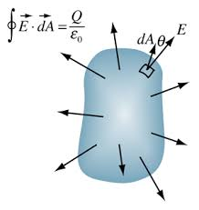

Gauss's law is one of the four Maxwell equations and is fundamental to understanding electric fields. It relates the electric flux through a closed surface to the total charge enclosed within that surface, providing a powerful tool for calculating electric fields in situations with high symmetry.
What is Gauss's Law?
Fundamental Statement
Gauss's law states that the total electric flux through any closed surface is proportional to the total charge enclosed by that surface.
This law is a direct consequence of the inverse-square nature of the electric force and provides a powerful method for calculating electric fields in situations with high symmetry, such as spherical, cylindrical, or planar charge distributions.

Electric flux through a closed surface is proportional to enclosed charge.
ε₀: Permittivity of free space = 8.85 × 10⁻¹² C²/N⋅m²
Understanding the Components
Let's break down what each part means:
Electric flux (∮E·dA): The total "flow" of electric field lines through the surface
Enclosed charge (Q_enc): The net charge inside the Gaussian surface
Closed surface: A surface that completely encloses a volume
Why Gauss's Law Works
The Physical Intuition
Gauss's law works because:
Electric field lines: Start on positive charges and end on negative charges
Conservation of field lines: The number of field lines is proportional to charge
Inverse square law: Field strength decreases as 1/r², but area increases as r²
Mathematical Derivation
Gauss's law can be derived from Coulomb's law and the principle of superposition:
Key Steps in Derivation:
Start with Coulomb's law: \(E = \frac{kq}{r^2}\)
Consider a spherical surface around a point charge
Calculate flux: \(\oint E \cdot dA = E \cdot 4\pi r^2\)
Substitute E: \(\oint E \cdot dA = \frac{kq}{r^2} \cdot 4\pi r^2 = 4\pi k q\)
Since \(k = \frac{1}{4\pi\epsilon_0}\): \(\oint E \cdot dA = \frac{q}{\epsilon_0}\)
Generalize to multiple charges using superposition
Applications of Gauss's Law
When to Use Gauss's Law
Gauss's law is most useful when there is high symmetry in the charge distribution:
Spherical symmetry: Point charges, charged spheres, spherical shells
Cylindrical symmetry: Long charged wires, coaxial cables
Planar symmetry: Large charged plates, parallel plates
Strategy for Using Gauss's Law
Identify symmetry: Look for spherical, cylindrical, or planar symmetry
Choose Gaussian surface: Pick a surface that matches the symmetry
Calculate flux: Evaluate ∮E·dA over the surface
Find enclosed charge: Calculate Q_enc within the surface
Solve for E: Use Gauss's law to find the electric field
Worked Examples
Example 1: Electric Field of a Point Charge
Problem: Use Gauss's law to find the electric field due to a point charge q.
Solution Steps:
Symmetry: Spherical symmetry around the point charge
Gaussian surface: Sphere of radius r centered on the charge
Flux calculation: ∮E·dA = E·4πr² (since E is constant on sphere)
Enclosed charge: Q_enc = q
Gauss's law: E·4πr² = q/ε₀
Solve for E: E = q/(4πε₀r²) = kq/r²
Answer: E = kq/r², which matches Coulomb's law.
Example 2: Electric Field of an Infinite Line of Charge
Problem: Find the electric field due to an infinite line of charge with linear charge density λ.
Solution Steps:
Symmetry: Cylindrical symmetry around the line
Gaussian surface: Cylinder of radius r and length L
Flux calculation: ∮E·dA = E·2πrL (only side surface contributes)
Enclosed charge: Q_enc = λL
Gauss's law: E·2πrL = λL/ε₀
Solve for E: E = λ/(2πε₀r)
Answer: E = λ/(2πε₀r), directed radially outward from the line.
Example 3: Electric Field Between Parallel Plates
Problem: Find the electric field between two large parallel plates with surface charge density ±σ.
Solution Steps:
Symmetry: Planar symmetry perpendicular to plates
Gaussian surface: Cylinder with faces parallel to plates
Flux calculation: ∮E·dA = EA + EA = 2EA (both faces contribute)
Enclosed charge: Q_enc = σA
Gauss's law: 2EA = σA/ε₀
Solve for E: E = σ/(2ε₀)
Answer: E = σ/(2ε₀) for one plate, or E = σ/ε₀ between two plates.
Gaussian Surfaces
Choosing the Right Surface
The key to using Gauss's law effectively is choosing an appropriate Gaussian surface:
Match the symmetry: Use spherical surfaces for spherical symmetry
Make E constant: Choose surface where E is constant in magnitude
Simplify the integral: Pick surface where E·dA is easy to evaluate
Include all relevant charge: Ensure surface encloses the charge of interest
Common Gaussian Surfaces
Surface Types by Symmetry
Spherical: For point charges, charged spheres, spherical shells
Cylindrical: For line charges, charged cylinders, coaxial cables
Planar: For charged plates, large flat surfaces
Cubical: Sometimes useful for rectangular symmetry
Limitations of Gauss's Law
When Gauss's Law is Not Useful
Low symmetry: Complex charge distributions without clear symmetry
Non-uniform fields: When E varies significantly over the surface
Mixed geometries: Combinations of different charge distributions
Time-varying fields: Gauss's law applies to static electric fields
In these cases, other methods like Coulomb's law, superposition, or numerical methods may be more appropriate.
Relationship to Other Laws
Gauss's Law and Coulomb's Law
Gauss's law and Coulomb's law are equivalent for static electric fields:
Coulomb's law: E = kq/r² (direct calculation)
Gauss's law: ∮E·dA = q/ε₀ (integral form)
Equivalence: Both give the same result for point charges
Gauss's Law and Electric Potential
Gauss's law can be used to find electric fields, which can then be integrated to find electric potential:
$$V = -\int \vec{E} \cdot d\vec{l}$$
Common Mistakes to Avoid
⚠️ Common Errors
Wrong Gaussian surface: Not matching the symmetry of the problem
Ignoring direction: Forgetting that E·dA is a dot product
Wrong enclosed charge: Not calculating Q_enc correctly
Using for low symmetry: Trying to use Gauss's law when symmetry is poor
Forgetting units: Not keeping track of units in calculations
Practice Problems
Practice Problem 1
Problem: A spherical shell of radius R has a total charge Q distributed uniformly on its surface. Find the electric field inside and outside the shell.
Click for solution
Solution:
Inside (r < R): Gaussian sphere of radius r
Enclosed charge: Q_enc = 0 (no charge inside)
Gauss's law: E·4πr² = 0 → E = 0
Outside (r > R): Gaussian sphere of radius r
Enclosed charge: Q_enc = Q
Gauss's law: E·4πr² = Q/ε₀ → E = Q/(4πε₀r²)
Answer: E = 0 inside, E = Q/(4πε₀r²) outside
Practice Problem 2
Problem: An infinite plane has surface charge density σ. Find the electric field on both sides of the plane.
Click for solution
Solution:
Symmetry: Planar symmetry perpendicular to plane
Gaussian surface: Cylinder with faces parallel to plane
Flux: ∮E·dA = 2EA (both faces contribute equally)
Enclosed charge: Q_enc = σA
Gauss's law: 2EA = σA/ε₀
Result: E = σ/(2ε₀) on both sides
Answer: E = σ/(2ε₀) on both sides of the plane
Key Concepts Summary
Gauss's law: ∮E·dA = Q_enc/ε₀ relates flux to enclosed charge
High symmetry required: Most useful for spherical, cylindrical, or planar symmetry
Gaussian surface: Must match the symmetry of the charge distribution
Flux calculation: ∮E·dA is the key mathematical operation
Enclosed charge: Only charge inside the surface contributes
Equivalent to Coulomb's law: Both give same results for static fields